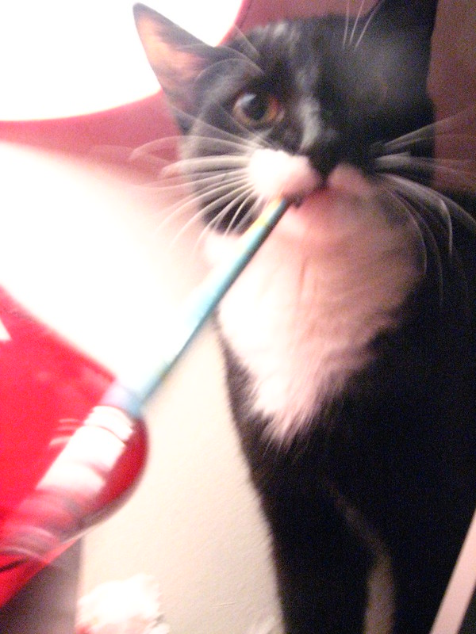

1 While they aren’t creating masterpieces with deliberate intention, cats’ natural behaviors—pawing, stepping, scratching, and exploring—often result in surprisingly creative outcomes. Some cats engage directly with paint-covered surfaces or digital tablets, such as cat painting apps, producing colorful and abstract patterns. Others participate indirectly by knocking objects over, walking across keyboards, or interacting with creative tools, unintentionally generating art-like compositions that can be both whimsical and visually striking.
2: A few humans have built full projects around felines as artists, documenting paws-on-paint canvases or turning a cat’s movements into digital brushstrokes. There are exhibitions and charity auctions featuring “cat-made” artwork, blending humor, curiosity, and genuine aesthetic charm. These projects highlight how ordinary feline behaviors can be reframed as art, offering entertainment, social engagement, and even charitable fundraising opportunities.
3: More experimental techniques translate a cat’s ordinary actions into creative output. Motion tracking software can convert a cat’s movement around a room into flowing digital lines, while playful behaviors like knocking objects or dragging materials create unique textures or patterns. Some artists blend their own planned designs with a cat’s spontaneous additions, merging intentional and instinctive elements. Altogether, these methods demonstrate that even the simplest feline actions can become imaginative and expressive artworks.
